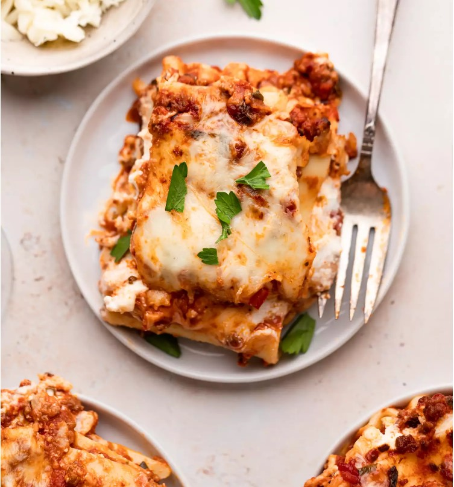

Ingredients
For the meat sauce:
- 2 teaspoons extra virgin olive oil
- 1 pound ground beef chuck
- 1/2 medium onion, diced (about 3/4 cup)
- 1/2 large bell pepper (green, red, or yellow), diced (about 3/4 cup)
- 2 cloves garlic, minced
- 1 (28-ounce)can good-quality tomato sauce
- 3 ounces tomato paste (half a 6-ounce can)
- 1 (14 ounce) can crushed tomatoes
- 2 tablespoons chopped fresh oregano, or 2 teaspoons dried oregano
- 1/4 cup chopped fresh parsley (preferably flat leaf), packed
- 1 tablespoon Italian seasoning
- 1 pinch garlic powder and/or garlic salt
- 1 tablespoon red or white wine vinegar
- 1 tablespoon to 1/4 cup sugar (to taste, optional)
- Salt
To assemble the lasagna:
- 1/2 pound dry lasagna noodles (requires 9 lasagna noodles - unbroken)
- 15 ounces ricotta cheese
- 1 1/2 pounds (24 ounces) mozzarella cheese, grated or sliced
- 1/4 pound (4 ounces) freshly grated Parmesan cheese
Description
This classic lasagna recipe is made with an easy meat sauce as the base.
Layer the sauce with noodles and cheese, then bake until bubbly!
This is great for feeding a big family and freezes well, too
Receipe Credits:
Steps:
For this recipe, we are essentially making a thick, meaty tomato sauce and layering that with noodles and cheese into a casserole. Here's the run-down:
- Start by making the sauce with ground beef, bell peppers, onions, and a combo of tomato sauce, tomato paste, and crushed tomatoes. The three kinds of tomatoes gives the sauce great depth of flavor.
- Let this simmer while you boil the noodles and get the cheeses ready. We're using ricotta, shredded mozzarella, and parmesan -- like the mix of tomatoes, this 3-cheese blend gives the lasagna great flavor!
- From there, it's just an assembly job. A cup of meat sauce, a layer of noodles, more sauce, followed by a layer of cheese. Repeat until you have three layers and have used up all the ingredients.
- Bake until bubbly and you're ready to eat!